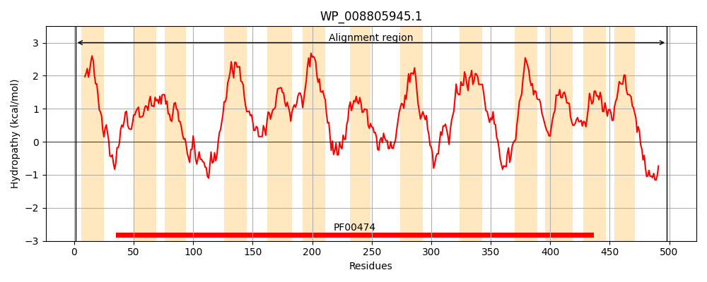
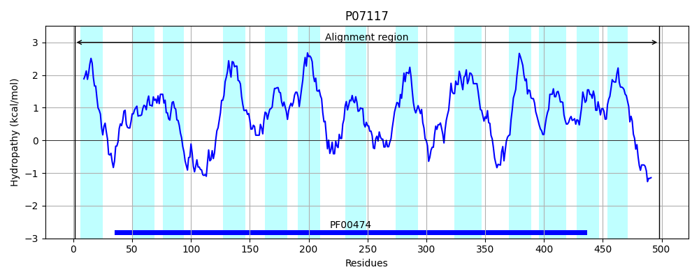
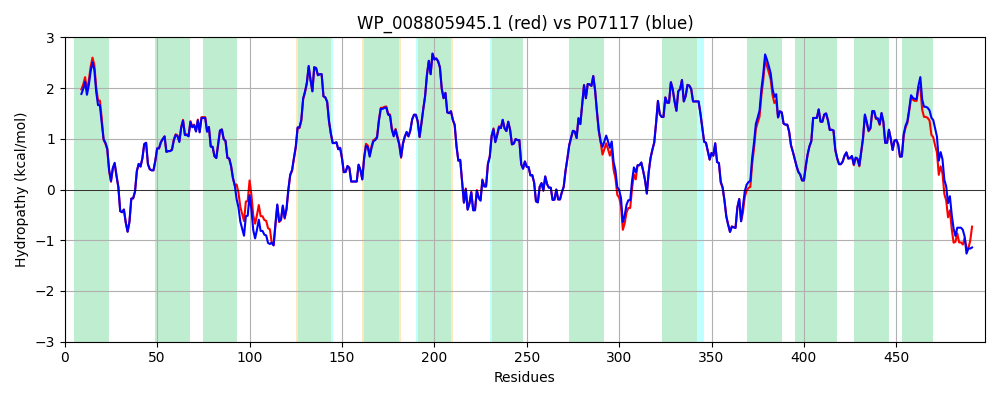

Hit Accession: P07117
Hit TCID: 2.A.21.2.1
Hit Description: gnl|BL_ORD_ID|8402 gnl|TC-DB|P07117|2.A.21.2.1 SODIUM/PROLINE SYMPORTER (PROLINE PERMEASE) - Escherichia coli.
Mach Len: 498
e:0.000000
Query TMS Count : 13
Hit TMS Count: 13
TMS-Overlap Score: 12.850000
Predicted Substrates:CHEBI:26271;proline
BLAST Alignment:
Score: 2459 , Bit scores: 951 bits, E-value: 0.0e+00, Alignment length: 498, Percentage identity: 96
Query: 1 MAISTPMLVTFIVYIFGMVLIGFIAWRSTKNFDDYILGGRSLGPFVTALSAGASDMSGWLLMGLPGAIFLSGISESWIAIGLTLGAWINWKLVAGRLRVHTEVNNNALTLPDYFTGRFEDKSRVLRIISALVILLFFTIYCASGIVAGARLFESTFGMSYETALWAGAAATIIYTFVGGFLAVSWTDTVQASLMIFALILTPVIVIISVGGFGDSLEVIKQKSIENIDMLKGLNFVAIISLMGWGLGYFGQPHILARFMAADSHHSIVHARRISMTWMILCLAGAVAVGFFGIAYFNNNPSLAGAVNQNAERVFIELAQILFNPWIAGILLSAILAAVMSTLSCQLLVCSSAITEDLYKAFLRKNAGQKELVWVGRMMVLVVALVAIALAANPENRVLGLVSYAWAGFGAAFGPVVLFSVMWSRMTRNGALAGMVIGALTVIVWKQFGWLGLYEIIPGFIFGSLGIVVFSLLDKAPSASMQQRFAEADAHYHTPPPVR 498
MAISTPMLVTF VYIFGM+LIGFIAWRSTKNFDDYILGGRSLGPFVTALSAGASDMSGWLLMGLPGA+FLSGISESWIAIGLTLGAWINWKLVAGRLRVHTE NNNALTLPDYFTGRFEDKSR+LRIISALVILLFFTIYCASGIVAGARLFESTFGMSYETALWAGAAATI+YTF+GGFLAVSWTDTVQASLMIFALILTPVIVIISVGGFGDSLEVIKQKSIEN+DMLKGLNFVAIISLMGWGLGYFGQPHILARFMAADSHHSIVHARRISMTWMILCLAGAVAVGFFGIAYFN++P+LAGAVNQNAERVFIELAQILFNPWIAGILLSAILAAVMSTLSCQLLVCSSAITEDLYKAFLRK+A QKELVWVGR+MVLVVALVAIALAANPENRVLGLVSYAWAGFGAAFGPVVLFSVMWSRMTRNGALAGM+IGALTVIVWKQFGWLGLYEIIPGFIFGS+GIVVFSLL KAPSA+MQ+RFAEADAHYH+ PP R
Sbjct: 1 MAISTPMLVTFCVYIFGMILIGFIAWRSTKNFDDYILGGRSLGPFVTALSAGASDMSGWLLMGLPGAVFLSGISESWIAIGLTLGAWINWKLVAGRLRVHTEYNNNALTLPDYFTGRFEDKSRILRIISALVILLFFTIYCASGIVAGARLFESTFGMSYETALWAGAAATILYTFIGGFLAVSWTDTVQASLMIFALILTPVIVIISVGGFGDSLEVIKQKSIENVDMLKGLNFVAIISLMGWGLGYFGQPHILARFMAADSHHSIVHARRISMTWMILCLAGAVAVGFFGIAYFNDHPALAGAVNQNAERVFIELAQILFNPWIAGILLSAILAAVMSTLSCQLLVCSSAITEDLYKAFLRKHASQKELVWVGRVMVLVVALVAIALAANPENRVLGLVSYAWAGFGAAFGPVVLFSVMWSRMTRNGALAGMIIGALTVIVWKQFGWLGLYEIIPGFIFGSIGIVVFSLLGKAPSAAMQKRFAEADAHYHSAPPSR 498 | Protein Hydropathy Plots: |
|---|
|  |  |
Pairwise Alignment-Hydropathy Plot:
|
|---|
|  |